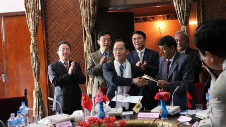

wo
Chinese Academy of Sciences (CAS) institutes signed a memorandum of understanding with Tribhuvan University
(TU) of Nepal on April 7 in Kathmandu, Nepal. The MOU calls for scientific cooperation in the areas of
climate change, biodiversity protection and natural hazard management in the two countries.
The
participating CAS units are the Institute of Tibetan Plateau Research based in Beijing and the Institute of
Mountain Hazards and Environment based in Chengdu, capital of southwest China’s Sichuan
Province.
|
 |
|
A Memorandum of Understanding is signed between ITP, CAS and TU, represented by Prof. Yao
Tandong, Director of ITP, and Prof. Dr. Hira Bahadur Maharjan, Vice-Chancellor of TU. (Image
by ITP,CAS.) |
Prof.
BAI Chunli, president of CAS, attended the signing ceremony and delivered a speech. He said China is willing
to work with Nepal to help develop science and technology in the country. He also noted that dozens of
scientists and students from Nepal are now working and studying at CAS. He pointed out that both sides
should take advantage of various platforms, such as CAS’s Third Pole Environment (TPE) program, in order to
strengthen scientific collaboration.
Launched
by CAS, the TPE program is dedicated to the study of the environment of the “Third Pole,” a region centered
on the Tibetan Plateau that affects surrounding countries and regions. The TPE program aims to encourage
research on the “water-ice-air-ecosystem-human” interactions in the region. The program’s goal is to
understand environmental change processes and their influence on global change, especially monsoon systems.
With such understanding, humans can enhance their adaptation to environmental change and increase harmony
with nature.
Prof.
Dr. Hira Bahadur Maharjan, vice-Chancellor of TU, said the negative effects of global warming don't have
borders and Nepal—with its fragile ecological environment—urgently needs to cooperate with international
organizations such as CAS.
After
signing the MOU, a ceremony was held to launch the TPE Kathmandu Center. The center was jointly built by CAS
and TU.
Mr.
Sushil Koirala, premier of Nepal, met with Prof. BAI Chunli and the CAS delegation during their
visit.